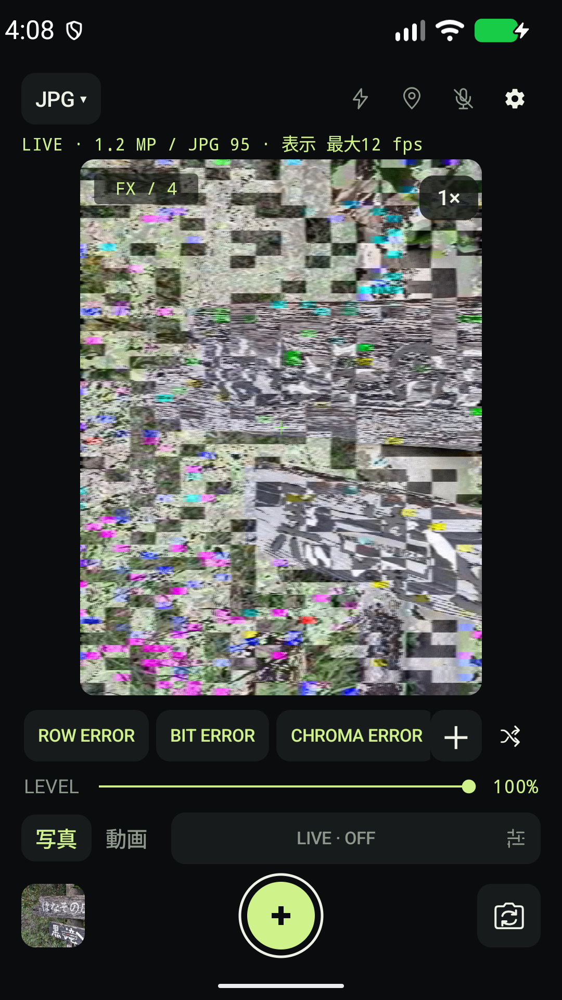
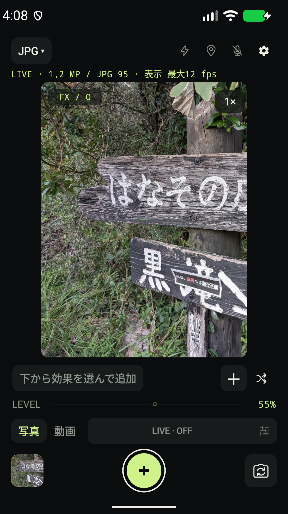
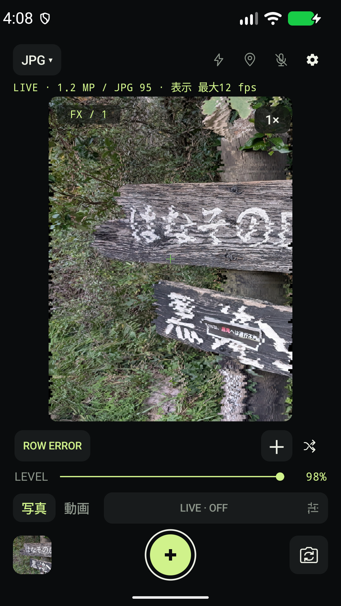

FAULT-BASED CAMERA / ANDROID
壊れた信号を、
写真にする。
画素、読み出し、復元、色、媒体、表示。
信号のどこを壊すかを選び、ひとつの撮像系を組む。
同じ故障の性格を保ちながら、
その時にしか現れない事故を撮るカメラです。
Google Play クローズドテスト参加者募集中
Android 12+ ／ 写真・動画 ／ 端末内で処理

ONE BROKEN SYSTEM
壊れ方に、個性を。
その変化に、時間を。
故障の「個体」「揺らぎ」「事故」を
それぞれ独立して扱う設計です。
同じ場所が、同じように弱い。
故障の位置や偏りを、ひとつの個体の性格として保持。時間が進んでも、選んだ経路や個体を勝手に入れ替えません。
性格を保ったまま、変化する。
読み出しのずれや露光の位相が、連続して動く。各FAULTが固有の時間変化を持ち、同じ系の違う瞬間を生みます。
その瞬間だけ、欠ける。
一時的な欠落や誤読が、連続する映像へ割り込む。固定した模様と、その時に起きる事故を分けて組み立てます。
8 FAULT POINTS / 13 FAULTS
光が画像になる、
その途中へ。
選んだ順番にかかわらず、
信号の因果順で処理を重ねます。
- 01
SENSOR
撮像素子
PIXEL DAMAGE
暗点・輝点・列の故障。
EXPOSURE
露光の欠落や、位相による帯。
- 02
READOUT
読み出し
ROW ERROR
行のずれ、帯、欠落、取得済みサンプルの再利用。
- 03
DATA
データ
BIT ERROR
bit位置と局所的なburstによる誤り。
ADDRESS ERROR
読み取る位置のずれや領域の誤読。
- 04
CFA / RECONSTRUCTION
色の復元
CFA ERROR
色フィルター配列の位相や領域のずれ。
DEMOSAIC ERROR
誤った近傍からの補間とサンプリング。
- 05
COLOR
色
CHROMA ERROR
輝度と色差を分け、色差をずらす。
COLOR MAP
パレットの位相・周期・混合を変える。
- 06
CODEC / STREAM
圧縮・ストリーム
BLOCK ERROR
ブロック単位の量子化欠落や誤読。
STREAM ERROR
復号画像の欠落と、同じフレーム内の再利用。
- 07
MEDIA
記録媒体
VHS
テープの帯域、tracking、dropout、noise。
- 08
DISPLAY
表示
CRT
走査・蛍光体の特性と、色ずれ・同期の故障。
CLEANはFAULTなし。LEVELは各FAULT固有の密度・距離・事故の影響へ変換されます。内部値はADVANCED MODEでAUTO／固定値を選べます。
実験的な拡張として、MOTION BLUR・THERMAL NOISE・SMEARと、FAULTごとの端末入力感度も搭載。実験機能とADVANCED MODEは初期OFFです。
各FAULTの操作値を読む ↗ONE SCENE / THREE SIGNAL PATHS
ひとつの景色に、
いくつもの壊れ方。
同じ入力画像を、異なる信号経路へ。
効果を重ねた結果を、画面で確かめます。

まず、素の景色。
加工なしから始めて、変化を見比べる。

読み出しを、ずらす。
行のずれや欠落で、輪郭をほどく。
ビットから、激しく崩す。
BIT ERRORを軸に、行のずれ、色の崩れ、VHSの質感を重ねる。
画面は1.3.1開発版の実際のUIです。開発者自身が撮影した写真をエミュレーターのカメラ入力に使用しています。
TIME / INPUT / RECORDING
信号の違いを、
そのまま扱う。
時間を操作する。
LIVEでは時間の進み方や変化量を設定し、動き・音量・カメラ時間・温度・処理負荷を任意で結合します。LIVEがOFFでも、FAULT固有の時間変化は進みます。
見えている信号を残す。
JPEGは撮影操作時の表示信号を確保して保存。通常動画も同じ処理画像を使います。解像度は対応するライブ出力に依存します。
RAWは、別の表現。
加工RAWはセンサーからCFAまでの6種類に対応。RAWは別露光で、RGBプレビューは近似です。原本RAWとRAW動画のDNG連番は無加工で残します。
起点は実カメラの信号です。被写体の意味を推論して生成・補完する処理は行いません。RGB上のCFA／DEMOSAICは再モザイクによる近似、BLOCK／STREAMは復号画像の故障モデルです。実際の圧縮データや通信パケット、端末のハードウェアを破壊する機能ではありません。
ON YOUR DEVICE
作品は、あなたの端末に。
画像処理と保存は端末内で。アカウント登録、広告、解析SDKはありません。アプリから開発者へ写真や動画を自動送信しません。
位置情報と音声は初期OFF。必要なときだけ有効にできます。OSやギャラリーの同期設定は別途ご確認ください。
プライバシーポリシーを読むJOIN THE CLOSED TEST
あなたの端末で、
試してみませんか。
この故障モデルを、さまざまな端末と被写体で確かめるクローズドテストです。
試してほしいこと
FAULTを選び、重ね、時間とともに観察する。
写真・動画の保存結果まで確かめる。
教えてほしいこと
故障の表情、操作と結果のつながり、
保存や動作で気になったこと。
必要なもの
Android 12以降のカメラ搭載端末。
RAWなどの対応機能は端末により異なります。
Googleフォームへ進みます。参加登録に使うメールアドレスをお知らせください。
お申し込み後、参加条件と手順をご案内します。
Google Playのクローズドテストです。参加は登録・案内後となります。